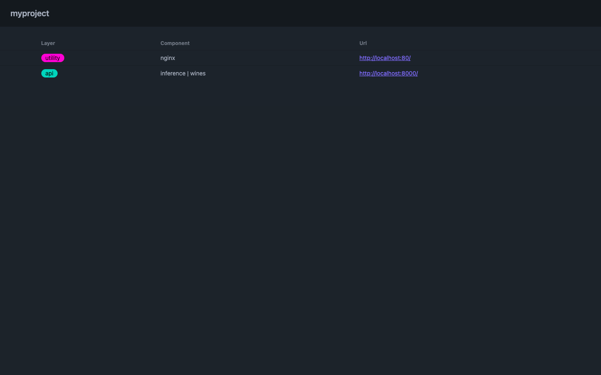
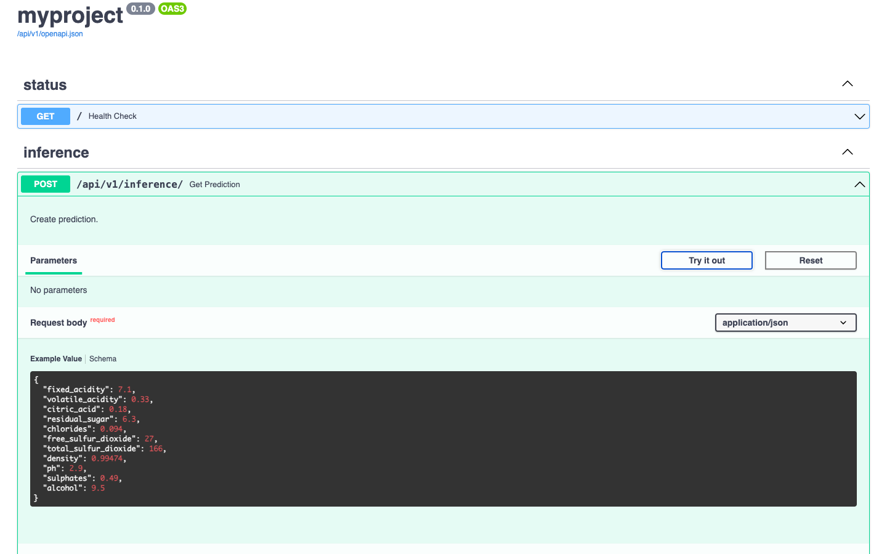

Open Data Framework
Open source, full stack data framework.
Installation
Create data folder
Name (required):
data
Create data file
Name (can be any):
events.csv
Types supported
int, float, str, datetime
| id | name | value | logged_at |
|---|---|---|---|
| 1 | noname | 0.1 | 2024-01-01 00:00:00 |
1,noname,0.1,2024-01-01 00:00:00
EOF
tree.
└── data
└── events.csv
Init
Name (can be any):
myproject
tree.
├── data
│ └── events.csv
└── myproject
├── data
│ └── events.csv
└── settings.json
settings.json
"opendataframework": "0.0.4",
"project": "myproject",
"profile": "research",
"layout": "research",
"entities": {
"events": {
"name": "event",
"description": "events research",
"fields": {
"id": "int",
"name": "str",
"value": "float",
"logged_at": "datetime|%Y-%m-%d %H:%M:%S"
},
"layers": {
"devcontainers": {
"R": {}
},
"utility": {
"texlive": {}
}
}
}
},
"mounts": {
"R": {
"workspaceMount": "source=${localWorkspaceFolder},target=/myproject,type=bind",
"workspaceFolder": "/myproject",
"mounts": [
"source=${localWorkspaceFolder}/../../../data,target=/myproject/data,type=bind,consistency=cached"
]
}
},
"volumes": {
"texlive": {
"../output": "/usr/src/app/mnt/output",
"../paper": "/usr/src/app/mnt/paper"
}
},
"ports": {}
}
Create
./myproject/data/raw/events.csv
myproject: research layout created
./myproject/platform/devcontainers/R created
./myproject/platform/utility/texlive created
tree.
├── data
│ └── events.csv
└── myproject
├── README.md
├── code
│ ├── build
│ ├── check
│ ├── learn
│ └── share
├── data
│ ├── derived
│ └── raw
│ └── events.csv
├── expectations.py
├── libraries
├── logs
├── models
├── output
│ ├── figures
│ └── tables
├── paper
├── platform
│ ├── devcontainers
│ │ └── R
│ ├── docker-compose.yaml
│ ├── setup.sh
│ └── utility
│ └── texlive
│ ├── Dockerfile
│ └── mnt
├── requirements.txt
└── settings.json
Build platform
Command builds platform's images.
Start platform
Command starts platform's containers.
Setup platform
Command setup platform's containers.
Install dependencies
Command creates myproject/.venv/ and installs dependencies from requirements.txt.
Build from the source
- This package requires poetry to be installed in your system first.
Optional: Set virtualenvs.in-project to
trueby runningpoetry config virtualenvs.in-project trueto create.venvinside project's folder. - Clone opendataframework.
- Install
opendataframeworkin editable mode with dependencies by running:poetry install.
Concepts
Layout
Predefined project layout and scripts to get up & running.
Research
.
├── code
│ ├── build
│ ├── check
│ ├── learn
│ └── share
├── data
│ ├── derived
│ └── raw
├── libraries
├── logs
├── models
├── output
│ ├── figures
│ └── tables
└── paper
Custom
No Layout (default)
Platform
Data platform. Set of pre-configured, open source, containerized tools used in project, hosted locally or deployed.
Layers & Components
Layers of data platform with containerized components.
analytics
superset
api
fastapi
devcontainers
python
R
storage
postgresql
utility
nginx
TeX Live
Profile
Pre-configured layout & data platform.
Research
Configuration for
Researchproject.
Custom
Manual configuration via CLI.
Examples
Inference API
We need 3 files in order to make predictions via API
data file(wines.csv) is needed to prepare schema forInference APImodel file(model.pkl) is needed to make a prediction viaInference APIrequirements.txtis needed to install extra dependencies needed for our model (for examplescikit-learn)
Create data folder
Name (required):
data
└── data
Create data file
Assume, we have a
modeland it wastrainedandfitusing the dataset
qualityis a column we want to predict
Now, lets create a data file
data filecan be used for prediction- inference endpoint will be generated based on
data fileschema
Name (can be any):
wines.csvFile should contain column names used to
fitthe modelColumn used to
trainthe model, but not tofitthe model (quality), will be predicted by inference endpointNote: column types supported are
int,float,str,datetime
7.1,0.33,0.18,6.3,0.094,27,166,0.99474,2.9,0.49,9.5
EOF
tree.
└── data
└── wines.csv
wines.csv
| fixed_acidity | volatile_acidity | citric_acid | residual_sugar | chlorides | free_sulfur_dioxide | density | ph | sulphates | alcohol |
|---|---|---|---|---|---|---|---|---|---|
| 7.1 | 0.33 | 0.5 | 6.3 | 0.094 | 27 | 166 | 0.99474 | 0.49 | 9.5 |
Create models folder
Name (required):
modelsModel folder (must correspond to thedata file name):wines
├── data
│ └── wines.csv
└── models
└── wines
Create model file
Add a model file into correspondent folder.
Name (required):
model.pkl
├── data
│ └── wines.csv
└── models
└── wines
└── model.pkl
Add dependencies
Dependencies are the packages required for our model to be able to work.
Assume our model requires
scikit-learn==1.5.2
Init project
Name (can be any):
myproject
Now, lets do manual configuration of myproject.
The only components we need to select are:
inference(required)
nginx(optional) - to make a simple static UI for our app where we can easily find the link to Inference API
- Name (wine): wine
- Plural (wines): wines
- Description: wine quality prediction
wine | analytics
superset: n
wine | devcontainers
python: n
R: n
wine | api
api-postgres: n
inference: y
wine | storage
postgres: n
wine | utility
nginx: y
texlive: n
What happened?
Required folders were copied to
myprojectfolderConfiguration file
myproject/setting.jsonwas created
├── data
│ └── wines.csv
├── models
│ └── wines
│ ├── model.pkl
│ └── requirements.txt
└── myproject
├── data
│ └── wines.csv
├── models
│ └── wines
│ ├── model.pkl
│ └── requirements.txt
└── settings.json
Create project
Since we are going to use defult cofiguration defined in myproject/setting.json lets go ahead and create the project.
Now, lets switch to myproject folder and look what is inside.
├── README.md
├── data
│ └── wines.csv
├── docs
│ ├── index.md
│ └── stylesheets
│ └── extra.css
├── expectations.py
├── ingest.py
├── mkdocs.yml
├── models
│ └── wines
│ ├── model.pkl
│ └── requirements.txt
├── platform
│ ├── api
│ │ └── inference
│ │ └── wines
│ │ ├── Dockerfile
│ │ ├── app
│ │ │ ├── __init__.py
│ │ │ ├── config.py
│ │ │ ├── crud.py
│ │ │ ├── dependencies.py
│ │ │ ├── main.py
│ │ │ ├── model.pkl
│ │ │ ├── models.py
│ │ │ └── router.py
│ │ └── pyproject.toml
│ ├── docker-compose.yaml
│ ├── setup.sh
│ └── utility
│ └── nginx
│ ├── Dockerfile
│ ├── nginx.conf
│ └── static
│ ├── images
│ │ └── logo.svg
│ └── index.html
├── requirements.txt
├── settings.json
└── tests
├── __init__.py
└── test_example.py
Build platform
Inside myproject run
Start platform
Inside myproject run
Check status
Inside myproject run
NAME IMAGE COMMAND SERVICE CREATED STATUS PORTS
myproject_nginx myproject:nginx "/docker-entrypoint.…" myproject_nginx 28 seconds ago Up 26 seconds 80/tcp, 0.0.0.0:80->8080/tcp
myproject_wines myproject:wines "uvicorn app.main:ap…" myproject_wines 30 seconds ago Up 28 seconds 0.0.0.0:8000->8000/tcp
Simple Frontend Server, serves list of urls registred in
myproject

Swagger UI with endpoints

Make predictions
Lets make a prediction via API
"volatile_acidity": 0.33,
"citric_acid": 0.18,
"residual_sugar": 6.3,
"chlorides": 0.094,
"free_sulfur_dioxide": 27,
"total_sulfur_dioxide": 166,
"density": 0.99474,
"ph": 2.9,
"sulphates": 0.49,
"alcohol": 9.5
}'
Response:
5.591486165052446 (quality column prediction)